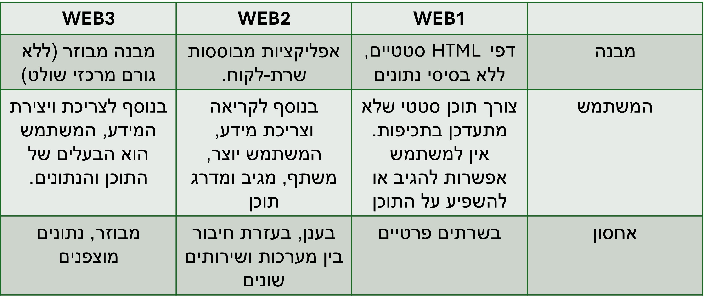

About Me
חנה דְרֶזְנְר-גת ידועה יותר בשם הבמה "אִילָנִית", היא זמרת ישראלית.
אילנית מחזיקה בשיא הזכיות בתואר "זמרת השנה" בישראל - 7 פעמים (ברצף).
היא החלה את דרכה בשנות השישים והצליחה לפרוץ לעולם המוזיקה עם קול ייחודי וביצועים מרגשים, שהפכו אותה לדמות משפיעה בזירת הפופ והבלדות.
במהלך הקריירה הארוכה שלה היא הוציאה עשרות להיטים שהפכו לחלק בלתי נפרד מהפסקול הישראלי, ושירתה נחשבת לסמל של אותנטיות ורגש.
בנוסף למוזיקה, אילנית מתאפיינת באהבתה לאמנות, לטיולים בטבע ולקריאה.
היא זכתה להשפעה רבה מדמויות מובילות בעולם המוזיקה, כאשר בין היתר דמותו של שלום חנוך נחשבת לאחת מהמשפיעות על סגנונה והגישה היצירתית שלה.
באופן כללי, אילנית ממשיכה להוות דוגמה להצלחה, התמדה וחדשנות, והתרומה שלה למוזיקה הישראלית נשארת עד היום חלק בלתי נפרד מהתרבות המקומית.
My Photos
My Playlist
Like
QR Code
Q&A
- מהם שלושת ההבדלים העיקריים בין web1, web2 וweb3?
- USECASE לדוגמא
- אתר של סופרמרקט:
ב web 1 המשתמש נכנס לאתר סופרמרקט שמציג רשימה סטטית של מוצרים.
לא מופיעים מחירים עדכניים, אין מלאי בזמן אמת ואין אפשרות להזמין אונליין.
כמו כן, אין התחברות לחשבון אישי או התאמה המלצות לקניות מותאמות אישית.
ב web 2 המשתמש נכנס לאתר מודרני של סופרמרקט, מחובר לחשבון אישי, מוסיף מוצרים לעגלה, רואה מחירים בזמן אמת,
המלצות על מוצרים דומים, ביקורות של משתמשים אחרים והצעות מבוססות רכישות קודמות.
המשתמש יכול לבצע הזמנה אונליין ולקבל עדכון במייל או באפליקציה.
ב web 3 המשתמש גולש לאתר מבוזר שמחובר לארנק דיגיטלי.
פרטי הקנייה והעדפות התזונה שלו נשמרים אצל המשתמש (לא בשרת של הסופר), ומנותחים באופן מקומי עם בינה מלאכותית.
המערכת מציעה מוצרים מותאמים אישית תוך שמירה על פרטיות מלאה ולבסוף הלקוח משלם בביטקווין.
